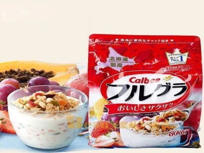

|  |
Food's name: Cereal Calbee▸ Ingredients:
▸ Time to prepare: 10 minutes ▸ Approx quantity: 1 medium bowl |
▸ Detailed recipe:
- Japanese Calbee cereal contains a lot of nuts and fruits with high nutritional value,
without adding spices, but taking advantage of the inherent flavors of that fruit.
From young children to the elderly, even people with diabetes are very interested
in Japanese Calbee cereal because it is very nutritious and delicious.
▸ Calories and related information: